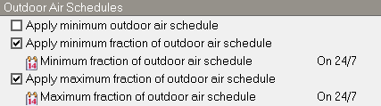
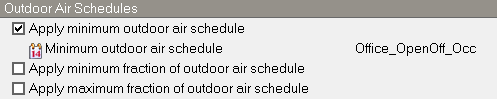
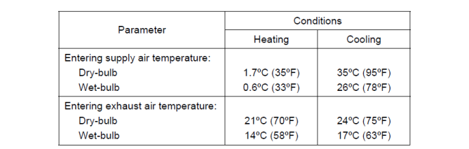
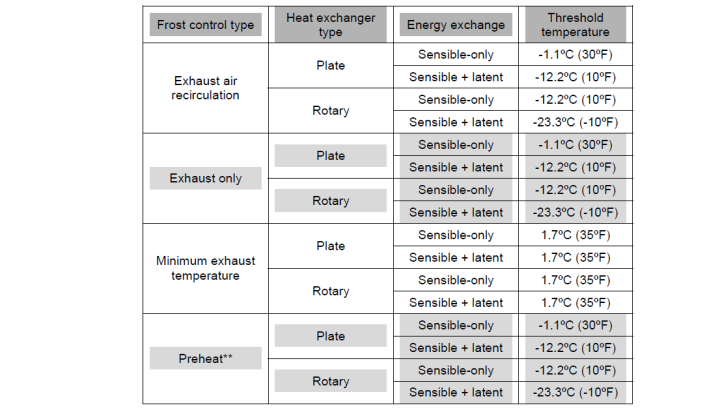

Unidad de tratamiento de aire genérica (AHU)
La AHU genérica básica incluye un sistema de aire exterior y un ventilador de impulsión. También hay opciones de ciclo nocturno, recuperación de calor, economizador, baterías de precalentamiento y preenfriamiento y ventilador de extracción. Pueden añadirse otros componentes como baterías de calefacción y refrigeración y humidificadores.

Consulte el tutorial Añadir circuitos de aire y unidades de tratamiento de aire .
General
Nombre
Es una etiqueta única de solo lectura generada automáticamente por el programa que incorpora el nombre del circuito de aire en el que se encuentra la AHU.
Tipo de ventilador
Este ajuste indica si el sistema es de volumen de aire constante (CAV) o variable (VAV). Puede tomar uno de dos valores:
- 1-Caudal constante o
- 2-Caudal variable.
Nota 1: Una vez conectado un circuito de aire a una ADU de zona, el ajuste Tipo de ventilador queda fijado y deshabilitado para impedir conexiones no válidas hasta que se desconecte de todas las ADU. Para cambiar de VAV a CAV o viceversa mediante este control, desconecte primero el lado de demanda de todas las ADU de zona, eliminando las ramas de conexión.
Nota 2: Una vez definido el tipo de ventilador de la AHU, el circuito de aire solo puede conectarse a unidades de distribución de aire de zona (ADU) compatibles: los circuitos CAV solo a ADU CAV y los sistemas VAV solo a ADU VAV.
Caudal de aire de impulsión de diseño
Es el caudal volumétrico de diseño del aire primario del circuito (en m3/s o ft3/min). Puede dimensionarse automáticamente.
Funcionamiento
Programación de disponibilidad
Esta programación indica cuándo está disponible la AHU. Un valor mayor que 0, normalmente 1, indica que puede estar encendida durante la hora. Un valor menor o igual que 0, normalmente 0, indica que debe estar apagada.
Cuando la unidad no está disponible, valores de programación 0, también se apagan todos los equipos que contiene.
Ciclo nocturno
Este ajuste permite encender y apagar un sistema de aire cuando una o varias zonas se calientan o enfrían demasiado. Habitualmente la AHU se apaga por la noche, pero si el edificio se enfría en exceso puede producirse condensación y otros daños. Por ello los controles suelen encender el sistema si un termostato de control o cualquier termostato indica una temperatura inferior a la consigna nocturna. De igual modo pueden volver a encender la AHU si una zona supera la consigna nocturna de refrigeración.
Este mecanismo permite elegir cómo decidir el encendido nocturno: puede utilizarse la temperatura de una zona concreta o examinar todas las zonas conectadas a la AHU. También pueden especificarse una tolerancia de temperatura, el tiempo de funcionamiento una vez encendido y una programación de aplicabilidad.
Programación de aplicabilidad (ciclo nocturno)
Esta programación determina si el mecanismo se aplica durante un periodo. Valores mayores que cero, normalmente 1, indican que se aplica; valores menores o iguales que cero, normalmente 0, indican que no.
Tipo de control
Las opciones posibles son:
- 1‑Permanecer apagado indica que el ciclo nocturno no tendrá efecto; el encendido de la AHU dependerá de la programación del ventilador.
- 2‑Activar por cualquier zona indica que, si la temperatura de cualquier zona servida por el circuito de esta AHU está fuera de las consignas de calefacción o refrigeración, se enciende el ventilador central aunque su programación indique que está apagado.
- 3‑Activar por zona de control significa lo mismo, pero solo se utiliza la temperatura de la zona de control especificada.
- 4‑Activar solo ventiladores de zona es igual que 2‑Activar por cualquier zona , salvo que solo se activan los ventiladores de zona y el de la AHU permanece apagado.
Nota importante: Los circuitos de instalación y las unidades de zona necesarias deben estar disponibles durante el ciclo nocturno; ajuste sus programaciones. El gestor de disponibilidad del ciclo nocturno solo anula automáticamente la programación del ventilador del circuito de aire.
Tolerancia del termostato
Es la diferencia (en °C o °F) por la que la temperatura de zona debe superar la consigna de refrigeración o caer por debajo de la de calefacción para que el mecanismo solicite encender el sistema.
Tiempo de funcionamiento del ciclo
Tiempo en segundos durante el que funciona el sistema una vez activado. El valor predeterminado es 3600 segundos (1 hora).
Zona de control
Para la opción de tipo de control 3‑Activar por zona de control seleccione la zona de control.
Ventilador de extracción
Incluir ventilador de extracción
Por defecto todas las AHU incluyen un ventilador de extracción. Este ajuste permite retirarlo.
Nota: Si la AHU está conectada a una zona con una ADU de volumen de aire variable con recalentamiento y ventilador de velocidad variable, debe omitirse el ventilador de extracción de la AHU; de lo contrario EnergyPlus generará un error y abortará la simulación.
Modo mixto
Puede configurar controles de modo mixto para modelar la interacción óptima entre la ventilación natural programada o calculada y la AHU.
Consulte la sección de HVAC Modo mixto de la pestaña principal HVAC para conocer las opciones.
Nota: Si se activa aquí, los ajustes de modo mixto de este cuadro de AHU prevalecen sobre los de las zonas conectadas en la pestaña HVAC.
Sistema de aire exterior (común a todas las AHU)
El sistema de aire exterior incluye un mezclador, baterías opcionales de preenfriamiento y precalentamiento, un recuperador opcional y un controlador de aire exterior. Este proporciona aire de ventilación y refrigeración gratuita siempre que sea posible, mediante más aire exterior o derivación de un intercambiador aire-aire. El controlador ofrece varios límites seleccionables; si se supera alguno, el caudal exterior se fija al mínimo.
Si se cumplen todos los límites, para sistemas de flujo continuo el controlador actúa así: si la temperatura exterior es mayor o igual que la consigna del aire mezclado, el caudal exterior se fija al máximo; si es menor, modula el caudal para que la temperatura mezclada coincida con la consigna.
También puede utilizarse una programación horaria para simular un aumento del caudal exterior en aplicaciones de economizador de tipo pulsador. Cuando lo permite la programación, con valores mayores que 0, el caudal aumenta al máximo especificado por el usuario.
El controlador también puede ajustar el caudal exterior cuando la humedad interior es alta; para ello debe utilizarse un humidostato de zona. Durante una condición de humedad alta se modifica el caudal. Si el control se basa en la razón de humedad exterior y esta supera la interior, el control de humedad alta termina. Cuando se combina con economizador, el control de humedad alta tiene prioridad sobre el cambio de caudal. Si está activo el ciclo nocturno de la AHU, este prevalece y utiliza el caudal exterior máximo del controlador cuando enciende el ventilador.
Pueden especificarse baterías de preenfriamiento y precalentamiento y recuperación de calor aguas arriba del mezclador. En ese caso la modulación depende de las condiciones en el nodo de entrada del mezclador, no directamente del aire exterior; así se consideran los equipos que alteran sus condiciones. Si se cumplen todos los límites, para ventiladores cíclicos el caudal exterior se fija al máximo cuando se enciende el ventilador. Si no se cumplen, se fija al mínimo durante su funcionamiento.
DOAS

Suministro dedicado de aire exterior
Si esta AHU recibe aire exterior de un circuito DOAS aguas arriba, marque esta casilla. Así puede conectarse el lado de suministro del circuito DOAS a las conexiones de aire exterior de la AHU. Véase abajo.


Recirculación

Si se marca esta opción, la AHU recircula una parte del aire suministrado; en caso contrario funciona con todo aire exterior.
Si necesita modelar un sistema sin recirculación pero utilizar funciones disponibles bajo Recirculación, como un economizador, marque Recirculación y configure:
- Marque la casilla Aplicar programación de fracción mínima de aire exterior y seleccione la programación On 24/7 como programación de fracción mínima de aire exterior.
- Marque la casilla Aplicar programación de fracción máxima de aire exterior y seleccione la programación On 24/7 como programación de fracción máxima de aire exterior.
La captura muestra el resultado esperado.

Estos ajustes garantizan que la fracción de aire exterior sea 1 en todo momento y no haya recirculación.
Caudal mínimo de aire exterior
Es el caudal mínimo de aire exterior que el sistema puede suministrar (en m3/s o ft3/min).
Debe establecerse en cero al utilizar DCV y en Autosize si el caudal mínimo de aire exterior se dimensiona automáticamente.
Caudal máximo de aire exterior
Es el caudal máximo de aire exterior del sistema (en m3/s o ft3/min).
Tipo de límite mínimo
Las opciones son:
- 1‑Mínimo proporcional significa que el caudal mínimo exterior varía proporcionalmente al caudal total del sistema.
- 2‑Mínimo fijo significa que el caudal mínimo exterior es fijo independientemente del caudal real del sistema.
Economizador
Puede incluirse un economizador para proporcionar refrigeración gratuita aumentando el caudal exterior hacia la caja de mezcla de la AHU cuando las condiciones son favorables. Los tipos disponibles son:
- 1‑Sin economizador - el economizador no funciona y el caudal exterior permanece al mínimo durante toda la simulación.
- 2‑Bulbo seco fijo - fija el caudal exterior al mínimo si la temperatura exterior supera un límite de bulbo seco especificado.
- 3‑Bulbo seco diferencial - fija el caudal exterior al mínimo cuando la temperatura de bulbo seco exterior supera la del aire de retorno.
- 4‑Entalpía fija - compara el límite superior de entalpía introducido con la entalpía del aire exterior y fija el caudal al mínimo si esta última lo supera.
- 5‑Entalpía diferencial funciona como 4-Entalpía fija pero compara la entalpía del aire de retorno con la exterior. Si la exterior es mayor, el caudal exterior se fija al mínimo.
- 6‑Entalpía electrónica permite calcular el límite de razón de humedad exterior a partir de la temperatura de bulbo seco exterior y una curva cuadrática o cúbica y compararlo con la razón real. Si la real supera el límite calculado, el caudal exterior se fija al mínimo.
- 7‑Punto de rocío y bulbo seco fijos compara las temperaturas exteriores de punto de rocío y bulbo seco con sus límites superiores. Si cualquiera los supera, el caudal exterior se fija al mínimo.
- 8‑Bulbo seco y entalpía diferenciales permite basar el control en las estrategias de economizador 3-Bulbo seco diferencial y 5-Entalpía diferencial .
Además de los tipos anteriores, cada control comprueba los límites superiores introducidos de temperatura de bulbo seco, entalpía, razón de humedad y punto de rocío. Si se supera cualquiera, el caudal exterior se fija al mínimo.
Nota: El economizador controla la temperatura del aire mezclado independientemente de su tipo.
El diagrama ilustra cómo se controla el caudal del economizador.

Acción de control del optimizador del economizador
- El Min. Limit DB del gráfico anterior se establece mediante el ajuste temperatura mínima de bulbo seco del economizador y cuando la temperatura de aire exterior está por debajo de ese valor, el caudal de aire exterior se fija al mínimo.
- La consigna de aire mezclado la obtiene EnergyPlus de un gestor de consignas de aire mezclado que DesignBuilder crea automáticamente a partir de la consigna del primer gestor de refrigeración aguas abajo de la caja de mezcla de la AHU.
- Cuando la temperatura del aire exterior es inferior a la consigna de aire mezclado, el controlador modula el caudal de aire exterior para mantener la consigna de aire mezclado.
- El límite máximo de bulbo seco se establece mediante el ajuste temperatura máxima de bulbo seco del economizador , disponible únicamente para los tipos de economizador 2-Bulbo seco fijo y 7-Punto de rocío y bulbo seco fijos .
- Cuando la temperatura de aire exterior está entre la consigna de aire mezclado y el límite máximo de bulbo seco, el controlador de aire exterior fija su caudal al máximo.
- Cuando la temperatura exterior alcanza el límite máximo de bulbo seco, el controlador fija el caudal de aire exterior al mínimo.
Cuando el tipo de economizador se establece en 4‑Entalpía fija, el límite máximo de bulbo seco se sustituye por el valor de entalpía introducido en el ajuste límite máximo de entalpía del economizador . Es decir, en lugar de reducir el caudal exterior al mínimo al alcanzar la temperatura máxima, lo hace al alcanzar la entalpía máxima. El optimizador sigue manteniendo la consigna de temperatura del aire mezclado.
Nota: Al seleccionar un economizador debe incluirse un gestor de consigna de refrigeración o programado en el lado de suministro del circuito, normalmente aguas abajo de la AHU.
Tipo de acción de control del economizador
Hay dos opciones:
- 1‑Modular caudal aumenta el caudal exterior para alcanzar la consigna de temperatura mezclada, sujeto a los límites de este objeto, como temperatura máxima de bulbo seco o caudal exterior máximo.
- 2‑Caudal mínimo con derivación, solo está disponible con recuperación de calor. Se utiliza con un recuperador para refrigeración gratuita sin economizador convencional de aire, es decir, sin aumentar el caudal exterior en modo economizador. Mantiene el caudal exterior al mínimo. Con control de humedad alta, sin embargo, se fija al caudal máximo multiplicado por la razón de aire exterior para humedad alta. El intercambiador utiliza los límites del controlador para decidir si deriva el aire exterior o detiene el motor de una rueda rotativa. El intercambio también se suspende con control de humedad alta. Cuando se utiliza 2‑Caudal mínimo con derivación y el valor de programación horaria de control del economizador es 0, el caudal se fija al mínimo. Si no se utiliza programación horaria, siempre está al mínimo. Sin economizador también permanece al mínimo. Si hay economizador, este dato determina si se mantiene el caudal mínimo durante la derivación.
Tipo de bloqueo
Las opciones son:
- 1‑Sin bloqueo,
- 2‑Bloqueo con calefacción, bloquea el economizador cuando la unidad compacta está en calefacción: se cierran sus compuertas y el caudal exterior queda al mínimo.
- 3‑Bloqueo con compresor. Solo se aplica a sistemas unitarios con baterías DX. Además de bloquear el economizador en calefacción, lo bloquea cuando el compresor DX funciona para refrigeración. Es decir, el economizador debe satisfacer toda la carga de refrigeración y no puede funcionar junto con la batería DX. La opción 3‑Bloqueo con compresor también se denomina economizador «no integrado».
Límite mínimo de temperatura de bulbo seco del economizador
Es un límite inferior opcional de temperatura exterior (en °C o °F) para el economizador. Si la temperatura exterior es inferior, el caudal se fija al mínimo. El límite se aplica a las condiciones en el nodo actuador, haya o no componentes aguas arriba del mezclador.
Límite máximo de temperatura de bulbo seco del economizador
Es un límite superior opcional de temperatura exterior (en °C o °F) para el economizador. Si la temperatura exterior es superior, el caudal se fija al mínimo. El límite se aplica a las condiciones en el nodo actuador, haya o no componentes aguas arriba del mezclador.
Límite máximo de entalpía del economizador
Es un límite opcional de entalpía exterior (en J/kg o Btu/lb). Si se supera, el caudal exterior se fija al mínimo. El campo es obligatorio cuando el tipo de economizador es 4‑Entalpía fija. El límite se aplica a las condiciones en el nodo actuador, haya o no componentes aguas arriba del mezclador.
Límite máximo de temperatura de punto de rocío del economizador
Es un límite opcional de punto de rocío exterior (en °C o °F) para el economizador. Si se supera, el caudal exterior se fija al mínimo. El límite se aplica a las condiciones en el nodo actuador, haya o no componentes aguas arriba del mezclador.
Curva de límite de entalpía electrónica
Es una curva opcional cuadrática o cúbica que proporciona la razón máxima de humedad exterior en función de la temperatura de bulbo seco para el economizador. Si la razón exterior supera el máximo de la curva, evaluado a esa temperatura, el caudal exterior se fija al mínimo. El límite se aplica a las condiciones del nodo actuador, haya o no componentes aguas arriba del mezclador.
Programación horaria de control del economizador
Es una programación opcional que controla el caudal exterior mediante un economizador horario. Los valores iguales a 0 desactivan la función; los mayores que 0 aumentan el caudal al máximo. Si se combina con control de humedad alta, este tiene prioridad.
Control de humedad alta
Este ajuste determina si el caudal exterior se modifica en respuesta a una humedad relativa interior alta. Si se selecciona 2‑Sí , puede modificarse cuando la humedad interior supera la consigna del humidostato. Si se selecciona 1‑No , la opción se desactiva y no aparecen los tres ajustes siguientes.
Zona de control del humidostato
Es el nombre de la zona donde se encuentra el humidostato. Solo se requiere cuando el control de humedad alta es 2‑Sí.
Razón de caudal exterior para humedad alta
Es la relación entre el caudal exterior modificado y el máximo. Cuando el algoritmo determina que debe cambiar, el caudal de funcionamiento es el máximo multiplicado por esta razón. El valor mínimo es 0. Solo se requiere cuando el control de humedad alta está en 2‑Sí. Cuando se utiliza junto con un economizador, el control de humedad alta tiene prioridad.
Controlar humedad interior alta según razón de humedad exterior
Este ajuste determina si el control se activa únicamente por humedad relativa interior alta o solo cuando además la razón de humedad interior supera la exterior. Las opciones son 1‑Sí y 2‑No. Si se selecciona 2‑No , el control de humedad alta se activa siempre que el humidostato detecte una carga de humedad. Si se selecciona 1‑Sí , el modelo comprueba además que la razón exterior sea menor que la del aire de zona del humidostato. Solo se requiere cuando el control de humedad alta está en 2‑Sí.
Nota: Aunque las condiciones favorezcan el economizador, eso no garantiza que aumente el caudal exterior por encima del mínimo, ya que otros controles también lo gobiernan, como la consigna del aire mezclado, el control horario o la consigna máxima de humedad.
Programaciones de aire exterior
Si se programa el caudal mínimo de aire exterior, utilice una o ambas programaciones de caudal mínimo y fracción mínima descritas a continuación.
- Aplicar programación de aire exterior mínimo - aplica una programación cuyos valores multiplican el caudal mínimo de aire exterior para calcular el caudal en cualquier momento de la simulación. Puede seleccionar la programación de aire exterior mínimo a continuación.
- Aplicar programación de fracción mínima de aire exterior - aplica una programación cuyos valores multiplican el caudal total de diseño para calcular el caudal exterior en cualquier momento. Puede seleccionar la programación de fracción mínima de aire exterior a continuación.
La captura muestra cómo ajustar la programación de aire exterior de la AHU para variar entre el máximo definido en HVAC y cero según la programación de ocupación «Office_OpenOff_Occ», igual que en HVAC Simple.

Para controlar con precisión el aire exterior suministrado a las zonas como se describe, son necesarios otros 3 ajustes:
- Al utilizar los terminales VAV con recalentamiento y VAV sin recalentamiento de ese modo, también debe seleccionarse la opción Control según caudal de aire exterior en los 2 cuadros.
- También debe utilizarse la opción 2‑Mínimo fijo para el tipo de límite mínimo en el cuadro AHU.
- Asegúrese de que el caudal mínimo de aire exterior se establezca en Autosize y no en cero. Es lo contrario de lo requerido para DCV.
Es importante saber que incluso con esos ajustes normalmente no se obtienen caudales exteriores exactos especificados para zonas individuales, pero el caudal total de aire fresco suministrado por la AHU debe calcularse correctamente como suma de los requisitos mínimos de aire fresco de todas las zonas servidas por la AHU. El requisito total se suma para fijar el caudal mínimo de la unidad. El controlador fija el caudal exterior en cada paso de tiempo y cada zona recibe una parte proporcional a su caudal de impulsión actual. Ese caudal de zona se calcula según la demanda de refrigeración o calefacción, no según sus necesidades de aire fresco, y no existe un reparto adicional por zona, como ocurre en un sistema real.
Aplicar programación de aire exterior mínimo
Marque esta casilla para aplicar un límite de programación de aire exterior mínimo y seleccionar la programación en la lista siguiente.
Programación de aire exterior mínimo
Cuando se marca Aplicar programación de aire exterior mínimo puede seleccionar esta programación con valores decimales (0.0 – 1.0), que multiplican el caudal mínimo exterior. Es útil para reducirlo a cero durante horas desocupadas o de arranque. Si no se utiliza, el mínimo permanece constante durante la simulación (Tipo de límite mínimo = 2‑Mínimo fijo) o varía proporcionalmente al caudal de impulsión (Tipo de límite mínimo = 1‑Mínimo proporcional).
Aplicar programación de fracción mínima de aire exterior
Marque esta casilla para aplicar un límite de programación de fracción mínima de aire exterior y seleccionar la programación en la lista siguiente.
Programación de fracción mínima de aire exterior
Cuando se marca Aplicar programación de fracción mínima de aire exterior puede seleccionar esta programación con valores decimales (0.0 – 1.0), que multiplican el caudal de impulsión de diseño. Es un método alternativo para especificar el aire exterior mínimo; el otro es la programación de aire exterior mínimo descrita arriba.
Nota: Si se seleccionan tanto la programación de aire exterior mínimo como la programación de fracción mínima de aire exterior , en cada paso de simulación se calcula y aplica el mayor de los dos límites mínimos. Ambos ajustes anulan el caudal de aire exterior.
Aplicar programación de fracción máxima de aire exterior
Marque esta opción para limitar el caudal máximo de aire exterior.
Programación de fracción máxima de aire exterior
Cuando se selecciona Aplicar programación de fracción máxima de aire exterior puede elegir la programación correspondiente con valores fraccionarios entre 0.0-1.0, que limita la cantidad máxima de aire exterior del sistema.
Ventilación controlada por demanda
Las normas de ventilación orientan sobre el aire exterior necesario para una calidad interior aceptable. Por ejemplo, el procedimiento de tasa de ventilación (VRP) de ASHRAE Standard 62.1-2007/2010 exige determinar los caudales según el área de cada zona ocupada y su número de personas, considerando la eficacia de distribución y la eficiencia del sistema. El caudal exterior puede reajustarse dinámicamente al cambiar las condiciones, como la ocupación.
La opción VRP permite calcular esos requisitos y reajustarlos según la ocupación y la diversificación de zonas. Es especialmente útil en sistemas grandes que sirven a varios tipos de zona con ocupaciones variables.
El control DCV también permite modelar el procedimiento de calidad del aire interior (IAQP) definido en Standard 62.1
Ventilación controlada por demanda
Marque esta opción para incluir controles DCV en la AHU.
Método de aire exterior del sistema
Seleccione el método de cálculo del caudal mínimo exterior del sistema:
- 1-Suma de zonas - suma los caudales exteriores de todas las zonas servidas.
- 2-Procedimiento de tasa de ventilación Standard 62.1 - utiliza las ecuaciones multizona de 62.1-2007 para calcular el caudal exterior, considerando la eficacia de distribución de zona y la diversificación de fracciones de aire exterior.
- 3-Procedimiento de tasa de ventilación Standard 62.1 con límite - es similar a 2-Procedimiento de tasa de ventilación Standard 62.1. La diferencia es que 3-Procedimiento de tasa de ventilación Standard 62.1 con límite no permite que el caudal exterior supere el valor de diseño.
- 4-Procedimiento de calidad del aire interior (IAQP) - es el otro procedimiento de ASHRAE Standard 62.1-2007 para calcular el aire exterior necesario para mantener el dióxido de carbono interior en la consigna o por debajo de ella. Las consignas se definen en Actividad (Datos de actividad HVAC Simple ) o en el cuadro de zona HVAC (Datos de actividad HVAC Detallado ). La toma exterior y otros parámetros de diseño se basan en el análisis de fuentes de contaminantes y objetivos de concentración. EnergyPlus utiliza IAQP para controlar dióxido de carbono y permite acreditar controles que produzcan concentraciones de dióxido de carbono y contaminantes genéricos iguales o inferiores a las de VRP. IAQP también puede utilizarse para alcanzar objetivos específicos de ambos contaminantes.
- 5-Control proporcional según ocupación de diseño - el caudal exterior requerido varía proporcionalmente al porcentaje del rango de señal CO2. Esta variante usa la ocupación de diseño para calcularlo. Suele ser más realista para sistemas reales, que no disponen de ocupación en tiempo real, y generalmente debe usarse en simulaciones de diseño.
- 6-Control proporcional según programación de ocupación descrito en el apéndice A del manual de ASHRAE 62.1-2010 presenta otro método DCV basado en CO2 para una sola zona, en el que el caudal exterior varía proporcionalmente al porcentaje del rango de señal CO2. Esta variante utiliza la ocupación real del paso de tiempo y sirve para estimar el caudal cuando el controlador conoce la ocupación en tiempo real.
- 7-Procedimiento de calidad del aire interior (IAQP) para contaminante genérico calcula el aire exterior necesario para mantener el contaminante genérico interior en la consigna o por debajo de ella, definida en Actividad (Datos de actividad HVAC Simple ) o en el cuadro de zona HVAC (Datos de actividad HVAC Detallado ).
- 8-Procedimiento combinado de calidad del aire interior utiliza el mayor caudal exterior requerido por IAQP de CO2 y por IAQP de contaminante genérico. Ambos modelos deben estar activos al seleccionar esta opción.
- 9-Control proporcional según caudal exterior de diseño - utiliza el caudal exterior de diseño para calcular el caudal de demanda.
Nota: Si se selecciona 1-Suma de zonas, 2-Procedimiento de tasa de ventilación Standard 62.1 (VRP) o 3-Procedimiento de tasa de ventilación Standard 62.1 con límite , no debe seleccionarse la opción CO2 y contaminante en el cuadro de zona HVAC.
Nota: Si se selecciona 4-Procedimiento de calidad del aire interior (IAQP), 7-Procedimiento de calidad del aire interior (IAQP) para contaminante genérico o 8-Procedimiento combinado de calidad del aire interior , debe seleccionarse la opción CO2 y contaminante en al menos una zona HVAC conectada a la AHU.
Nota: Cuando se selecciona un método de control proporcional (5-Control proporcional según ocupación de diseño, 6-Control proporcional según programación de ocupación o 9-Control proporcional según caudal exterior de diseño), la selección de las opciones de zona HVAC CO2 y contaminante de zona HVAC es opcional. Márquelas si desea especificar las concentraciones mínimas de CO2 de zona para control proporcional; de lo contrario, déjelas desmarcadas.
Nota: Al utilizar DCV, asegúrese de que el caudal mínimo de aire exterior esté en cero y no en Autosize. Es lo contrario de lo necesario al programar el caudal exterior sin DCV.
En los consejos de modelado se ofrece una guía resumida sobre los pasos necesarios para modelar DCV.
Para obtener más detalles sobre la simulación de DCV en EnergyPlus, consulte la página de DCV de la EnergyPlus Engineering Reference Guide.
Fracción máxima de aire exterior de zona
En sistemas VAV, cuando una zona necesita una fracción exterior superior al máximo indicado por el usuario, se aumenta el caudal de impulsión de zona, si la compuerta aún no está totalmente abierta, para limitar la fracción al máximo. Esto permite reducir el caudal exterior del sistema mientras aumenta la impulsión total para satisfacer el requisito de la zona. Los valores válidos van de 0 a 1.0. El valor predeterminado 1.0 permite 100% de aire exterior y mantiene la compatibilidad anterior. Se aplica a sistemas VAV de conducto simple y doble.
Programación de disponibilidad
Selecciona la programación que define cuándo funciona DCV. Si su valor es 0.0, la ventilación mecánica no está disponible y no se solicita caudal. Si es > 0.0, normalmente 1, está disponible.
Consejo: Esta programación puede utilizarse para purgar contaminantes del edificio antes de la ocupación; se proporcionará ventilación por superficie aunque la ocupación sea cero.
Interacción con el control normal de aire exterior
La cantidad mínima de aire exterior suministrado a través de la caja de mezcla será la mayor de:
- el caudal mínimo calculado por el método normal sin DCV según los ajustes de HVAC y Actividad, y
- el caudal calculado por DCV
El caudal real puede ser superior al mínimo si hay refrigeración gratuita. En cualquier caso, no superará el caudal máximo de aire exterior
Recuperación de calor (común a todas las AHU)
Si se marca, la AHU incorpora un recuperador aire-aire sensible y latente capaz de calentar y enfriar la impulsión con energía residual del aire extraído.

El rendimiento del intercambiador puede definirse para transferir energía sensible, latente o ambas entre impulsión y extracción. No se requieren datos geométricos. Se especifican eficacias sensible y latente al 75% y al 100% del caudal nominal de impulsión en dos condiciones de funcionamiento, como indica la tabla:

Condiciones de funcionamiento para definir el rendimiento del intercambiador.
Nota: condiciones coherentes con la norma 1060-2001 del Air-Conditioning and Refrigeration Institute (ARI)
El intercambio entre impulsión y extracción se produce cuando la unidad está programada como disponible y existen ambos caudales. Puede combinarse con un economizador convencional seleccionando 1‑Modular caudal como tipo de acción de control; entonces se suspende el intercambio cuando el economizador o el control de humedad alta están activos, derivando totalmente el aire en un intercambiador de placas o deteniendo la rueda rotativa. También puede suspenderse para refrigeración gratuita sin economizador convencional, especificando 2‑Caudal mínimo con derivación . En invierno el aire húmedo extraído puede formar escarcha en superficies frías, reduciendo el caudal y la recuperación. Pueden modelarse precalentamiento de impulsión, temperatura mínima de extracción, recirculación de extracción y solo extracción. Para precalentamiento debe marcarse la batería de precalentamiento bajo Pretratamiento. Los demás tipos se eligen en la lista Tipo de control de escarcha .
Los intercambiadores aire-aire a veces mantienen fija la temperatura de salida de impulsión para evitar sobrecalentamiento. DesignBuilder ofrece una opción para modelar este control en EnergyPlus incluyendo automáticamente un gestor de consignas que establece una consigna en el nodo de salida de impulsión. Se modula la velocidad de la rueda o se deriva el aire en placas para alcanzar la consigna. Si también se utiliza un economizador, la consigna debe fijarse en su temperatura mínima. Si se utilizan control de escarcha y de temperatura de salida, prevalece el de escarcha; por ejemplo, la fracción de descongelación se determina como si no se modulase la rueda ni se derivase el aire.
Los 4 métodos siguientes ayudan a controlar sistemas de recuperación de calor.
Nota: Aunque algunos incluyen economizador, su finalidad principal es controlar la recuperación, no proporcionar refrigeración gratuita. Si esta es necesaria, considere la opción 1‑Modular caudal de economizador.
Método de control 1: consigna programada de calefacción de recuperación: Al recuperar calor con Control de temperatura de salida de impulsión y sin economizador, la unidad calienta el aire exterior hasta la consigna y no más mientras su temperatura esté por debajo. La unidad se deriva cuando se satisface la consigna. Cuando la temperatura exterior supera la consigna, el intercambiador no se deriva, funciona a plena capacidad y calienta todo lo posible. Esto puede producir temperaturas de impulsión altas con tiempo cálido. El método funciona bien con aire exterior frío, pero peor en verano.
Método de control 2: consigna fija de calefacción con economizador: Para evitar el sobrecalentamiento del método 1 puede introducirse un economizador con estos ajustes:
- Tipo de control del economizador = 2-Bulbo seco fijo
- Control del límite inferior de temperatura exterior de bulbo seco = On
- Economiser maximum limit dry-bulb temperature = Fixed heat recovery setpoint temperature, por ejemplo 12°C.
- Tipo de acción de control del economizador = 2-Caudal mínimo con derivación
- Heat recovery bypass control type = 1-Derivar dentro de los límites del economizador
- Control de temperatura del aire de impulsión a la salida de la recuperación de calor = 2-Sí
Reduce el sobrecalentamiento respecto al método 1, pero solo ofrece una consigna fija de recuperación para todo el año, lo que dificulta el control óptimo.
Método de control 3: consigna de temperatura exterior para recuperación: Otra forma de controlar la recuperación es usar el intercambiador solo cuando la temperatura exterior esté por debajo de una consigna y derivarlo en condiciones más cálidas. Los ajustes siguientes lo consiguen:
- Tipo de control del economizador = 2-Bulbo seco fijo
- Control del límite inferior de temperatura exterior de bulbo seco = On
- Economiser maximum limit dry-bulb temperature = 50 (valor alto para evitar el funcionamiento de la recuperación de calor en condiciones cálidas)
- Tipo de acción de control del economizador = 2-Caudal mínimo con derivación
- Heat recovery bypass control type = 1-Derivar dentro de los límites del economizador
- Control de temperatura del aire de impulsión a la salida de la recuperación de calor = 1-No
- Economiser lockout = 1-Sí
Método de control 4: usar EMS. Puede escribirse un programa EMS para controlar la recuperación de forma más óptima. El siguiente ejemplo se basa en el método 1 pero modifica la consigna de temperatura o las programaciones de disponibilidad de HR para obtener todo el beneficio en invierno y derivar el intercambiador cuando hace calor y no se necesita HR:
!- EMS Program: HR Optimal Control Strategy 2 - Stepped HR Setpoint + Zone Temp Sensing
EnergyManagementSystem:Sensor,
Toa,
Environment,
Site Outdoor Air Drybulb Temperature;
EnergyManagementSystem:Sensor,
TempBlock1Zone1, ! Name
Block1:Zone1 , ! Zone name
Zone Mean Air Temperature ; ! Output:Variable or Output:Meter Name
EnergyManagementSystem:Actuator,
OverrideHRAvailability, !- Name
HR Availability Schedule, !- Actuated Component Unique Name
Schedule:Compact, !- Actuated Component Type
Schedule Value; !- Actuated Component Control Type
EnergyManagementSystem:Actuator,
OverrideHRSetpointTemp, !- Name
HR Setpoint Schedule, !- Actuated Component Unique Name
Schedule:Compact, !- Actuated Component Type
Schedule Value; !- Actuated Component Control Type
EnergyManagementSystem:ProgramCallingManager,
Optimise HR , !- Name
BeginTimestepBeforePredictor, !- EnergyPlus Model Calling Point
CalcHRSetpoint; !- Program Name
EnergyManagementSystem:Program,
CalcHRSetpoint,
! Stepped control of HR setpoint temp depending on outside air temp
IF Toa < 8,
Set OverrideHRSetpointTemp = 20.0,
ELSEIF Toa < 12,
Set OverrideHRSetpointTemp = 16.0,
ELSE,
Set OverrideHRSetpointTemp = 12.0,
ENDIF,
IF Toa > OverrideHRSetpointTemp,
Set OverrideHRAvailability = 0, ! Avoid E+ HR control quirk
ELSEIF TempBlock1Zone1 > 23,
Set OverrideHRAvailability = 0, ! avoid HR when room temp more than 23
ELSE,
Set OverrideHRAvailability = 1, ! Otherwise HR is available
ENDIF;
Otras posibilidades incluyen comprobar las cargas de calefacción o refrigeración de zona para optimizar las consignas HR.
Caudal nominal de aire de impulsión
Caudal nominal de aire del lado primario o impulsión (en m3/s o ft3/min). Los caudales reales de impulsión y extracción deben estar entre 50% y 130% de este valor o se emitirá una advertencia.
Potencia eléctrica nominal
Consumo eléctrico del dispositivo (W), considerado constante mientras funciona. Este dato permite modelar el consumo de controles, como transformadores y relés, o del motor de un intercambiador rotativo. Ninguna de estas potencias aporta carga térmica a las corrientes de impulsión o extracción. El valor predeterminado es 0.
Tipo de control de derivación de recuperación de calor
Determina si se utiliza un control especializado para optimizar la recuperación junto con un economizador. Las opciones son:
- 1-Derivar dentro de los límites del economizador - opción predeterminada: desactiva la recuperación siempre que el controlador determine que el economizador está activo, es decir, dentro de todos sus límites. Si se selecciona un economizador sin definir límites, la recuperación siempre se derivará.
- 2-Derivar cuando el caudal exterior supera el mínimo - EnergyPlus comprueba si el economizador está activo y si el caudal exterior supera el mínimo; si ambas condiciones se cumplen, desactiva la recuperación. Por tanto, la recuperación permanece activa cuando el caudal es mínimo aunque el economizador solicite refrigeración gratuita. Se recomienda controlar la temperatura de salida de impulsión del intercambiador.
Control de temperatura de salida de impulsión
Determina si la salida de impulsión del intercambiador se controla a una consigna de temperatura. Las opciones son 1-Sí o 2-No, siendo predeterminada 2-No. Con este control se modula la velocidad de la rueda o se deriva aire alrededor del intercambiador de placas para mantener la consigna.
Cuando se selecciona 1-Sí puede introducir la temperatura de consigna en el campo siguiente. DesignBuilder añade automáticamente un gestor de consignas programado en el nodo de salida de impulsión del recuperador con la consigna introducida. Si se modela también un economizador de aire, la consigna de salida se fuerza a ser igual a la temperatura mínima de bulbo seco del economizador.
Programación de consigna de temperatura de salida de impulsión
Cuando se selecciona 1-Sí para Control de temperatura de salida de impulsión puede seleccionar una programación variable para controlar el recuperador como se ha descrito.
Tipo de intercambiador de calor
Este ajuste define el tipo de intercambiador modelado:
- 1‑Placas (por ejemplo, placas fijas) o
- 2‑Rotativo (por ejemplo, cilindro o rueda rotativa).
Los intercambiadores de placas pueden transferir solo calor sensible si las placas son de material no poroso, como aluminio, o también calor latente si son porosas.
El tipo afecta al modelado del control de escarcha y de temperatura de salida. En los rotativos se varía la velocidad para controlar la escarcha o la temperatura. En los de placas se utiliza una derivación de aire.
Bloqueo por economizador
Indica si el intercambiador se bloquea cuando funciona el economizador de aire: se deriva en los de placas o se detiene la rotación en los rotativos. Tanto el economizador como el control de humedad alta activan el bloqueo según este ajuste. Las opciones son 1‑Sí (bloqueado) o 2‑No.
Eficacia sensible al 100% del caudal de calefacción
Eficacia de intercambio sensible en la condición de calefacción de la tabla anterior con caudales de impulsión y extracción iguales al 100% del caudal nominal de impulsión especificado. El valor predeterminado es 0.
Eficacia latente al 100% del caudal de calefacción
Eficacia de intercambio latente en la condición de calefacción de la tabla de rendimiento con caudales de impulsión y extracción iguales al 100% del nominal. Introduzca 0.0 si el intercambiador no transfiere energía latente. El valor predeterminado es 0.
Eficacia sensible al 75% del caudal de calefacción
Eficacia de intercambio sensible en la condición de calefacción de la tabla de rendimiento con caudales de impulsión y extracción iguales al 75% del nominal. El valor predeterminado es 0.
Eficacia latente al 75% del caudal de calefacción
Eficacia de intercambio latente en la condición de calefacción de la tabla de rendimiento con caudales de impulsión y extracción iguales al 75% del nominal. Introduzca 0.0 si no se transfiere energía latente. El valor predeterminado es 0.
Eficacia sensible al 100% del caudal de refrigeración
Eficacia de intercambio sensible en la condición de refrigeración de la tabla de rendimiento con caudales de impulsión y extracción iguales al 100% del nominal. El valor predeterminado es 0.
Eficacia latente al 100% del caudal de refrigeración
Eficacia de intercambio latente en la condición de refrigeración de la tabla de rendimiento con caudales de impulsión y extracción iguales al 100% del nominal. Introduzca 0.0 si no se transfiere energía latente. El valor predeterminado es 0.
Eficacia sensible al 75% del caudal de refrigeración
Eficacia de intercambio sensible en la condición de refrigeración de la tabla de rendimiento con caudales de impulsión y extracción iguales al 75% del nominal. El valor predeterminado es 0.
Eficacia latente al 75% del caudal de refrigeración
Eficacia de intercambio latente en la condición de refrigeración de la tabla de rendimiento con caudales de impulsión y extracción iguales al 75% del nominal. Introduzca 0.0 si no se transfiere energía latente. El valor predeterminado es 0.
Tipo de control de escarcha
Hay cuatro opciones:
- 1‑Ninguno,
- 2‑Recirculación de aire de extracción, utiliza compuertas para devolver aire de extracción a la zona a través del lado de impulsión del intercambiador cuando la temperatura de entrada del aire exterior cae por debajo de un umbral. La fracción de tiempo recirculada depende de esa temperatura respecto al umbral, la fracción inicial de descongelación y su tasa de aumento (véase Tasa de aumento de la fracción de tiempo de descongelación). Durante la recirculación no se suministra aire exterior por el intercambiador, lo que puede o no ser aceptable para la ventilación de ocupantes.
- 3‑Solo extracción (derivación de impulsión): interrumpe periódicamente la impulsión por el intercambiador mientras continúa la extracción. La fracción de tiempo interrumpida depende de la temperatura exterior respecto al umbral, la fracción inicial de descongelación y su tasa de aumento (véase Tasa de aumento de la fracción de tiempo de descongelación). En instalaciones reales suelen tomarse medidas para evitar la despresurización, como compuertas automáticas o de presión o una derivación. En este modelo se supone que la impulsión se deriva durante el control de escarcha: el caudal total no se reduce, solo evita el intercambiador.
- 4‑Temperatura mínima de extracción supervisa la temperatura del aire extraído a la salida y reduce la eficacia del intercambiador, disminuyendo la velocidad de la rueda o derivando la impulsión, para evitar que caiga por debajo del umbral.
Temperatura umbral
Este campo define la temperatura de bulbo seco que inicia el control de escarcha (en °C o °F). El valor predeterminado es 1.7ºC. Si se selecciona 2‑Recirculación de aire de extracción o 3‑Solo extracción como tipo de control de escarcha, el umbral define la temperatura de entrada exterior por debajo de la cual se activa el control. Para 4‑Temperatura mínima de extracción , la eficacia se controla para evitar que la temperatura de salida de extracción caiga por debajo del umbral.
El umbral adecuado varía con la temperatura y humedad del aire extraído de entrada, el tipo de control de escarcha e intercambiador y si este transfiere solo energía sensible o también latente. La tabla muestra valores típicos, pero se recomienda consultar la información del fabricante del intercambiador concreto.

Temperaturas umbral típicas
Fuente: Indoor Humidity Assessment Tool, U.S. Environmental Protection Agency,
** Para modelar control de escarcha por precalentamiento, seleccione como tipo 1‑Ninguno y una batería de precalentamiento de AHU controlada para mantener el aire por encima del umbral.
Fracción inicial de tiempo de descongelación
Es la fracción del paso de simulación en la que se activa el control de escarcha al alcanzar el umbral. Solo se utiliza para 2‑Recirculación de aire de extracción y 3‑Solo extracción tipos de control de escarcha. El valor de este ajuste debe ser ≥ 0 y ≤ 1. La fracción de tiempo predeterminada es 0.083 (p. ej., 5 min / 60 min), típica del control de escarcha por recirculación de aire de extracción. Para el control solo por extracción suelen ser necesarias fracciones iniciales mayores (p. ej., 0.167 = 10 min / 60 min). Para obtener los mejores resultados, solicita esta información al fabricante.
Tasa de aumento de la fracción de tiempo de descongelación
Es la tasa de aumento de esa fracción cuando la temperatura exterior de entrada cae por debajo del umbral. Solo se utiliza para 2‑Recirculación de aire de extracción y 3‑Solo extracción tipos de control de escarcha. El valor de este ajuste debe ser ≥ 0. El valor predeterminado es 0.012 (p. ej., 0.72 min / 60 min por grado C de diferencia de temperatura), típico del control de escarcha por recirculación de aire de extracción. Para el control solo por extracción suelen ser necesarios valores mayores (p. ej., 0.024 = 1.44 min / 60 min por °C de diferencia de temperatura). Para obtener los mejores resultados, solicita esta información al fabricante.
La fracción total de tiempo de descongelación se determina así:
Total defrost time fraction = Initial Defrost Time Fraction + Rate of Defrost Time Fraction Increase * (Tthreshold – Tsupply air inlet)
El modelo no permite que la fracción total supere 1.0 ni sea inferior a 0.
Programación de disponibilidad
Esta programación determina la disponibilidad del recuperador en cada paso de simulación. Un valor mayor que 0, normalmente 1, indica que puede funcionar; uno menor o igual que 0, normalmente 0, indica que debe apagarse.
Baterías de pretratamiento
Pueden incluirse baterías de calefacción y refrigeración, humidificadores y enfriadores evaporativos para preacondicionar el aire exterior antes de entrar en la unidad. Se añaden igual que otras baterías: vaya al objeto AHU y colóquelas en su sección de aire exterior. Esto da flexibilidad en número, tipo y control. Véase la captura.

Se necesitan SPM independientes para baterías de precalentamiento y preenfriamiento para garantizar las condiciones de salida, incluso si hay un Setpoint Manager de temperatura en el lado de impulsión de la AHU.
Para añadir SPM que controlen las baterías de pretratamiento, vaya al lado de suministro del circuito de aire y haga clic en el icono Añadir gestor de consignas de la barra de herramientas. Véase la captura.

Nota: Solo pueden añadirse SPM de tipo 1-Programado para baterías de pretratamiento.